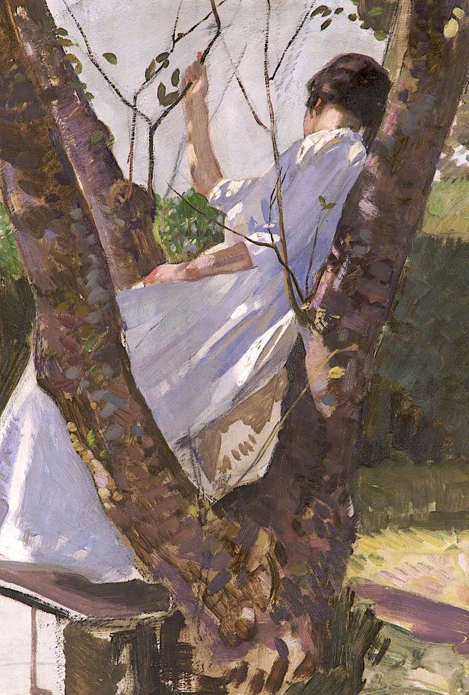

Prose
Boughbreak

From where she was sitting, all Sadie could see was the fluorescent pink of Mr. Stillner’s scalp, spiraling outwards like a seashell, or an orange peel. He still had hair—gray thinning tufts like clouds hanging stagnant in the sky—and standing eye to eye, the average viewer couldn’t tell how bad it was, but Sadie saw it all from up here, from her spot in the frontyard tree.
Sadie loved the tree because sometimes people forgot about her, as though she had been sucked away into a slipstream, or was something scribbled in the margins, just outside the periphery. She would watch as the front door opened, as her mother walked out, Sunday paper tucked beneath an arm, an unopened Diet Coke can and curious eyes scanning the green expanse of lawn. She would watch as the front door opened and then closed, counting the seconds that passed, imagining her mother scanning the familiar spots, checking Sadie’s bedroom one more time, the sitting room none of them ever used.
She would feel a thrum of giddiness deep in her gut as she heard her mother call not quite her name, but the shape of it, muffled by the layers of house that sat between them—relishing what she knew to be the swelling rise of her absence, her mother’s urgency like Sharpie drawn around a spiderbite. Sadie knew it was cruel to not give up the trick just yet, but there was something to it, watching the mounting concern, proof of existence marked by what was missing, the chalk outlines she would see on her mother’s crime shows. And her mother always looked so beautiful, her cheekbones casting shadows, the deep depressions reminding Sadie of thumbprints in clay.
The whole ordeal lasted maybe ninety seconds, two minutes tops. Then Sadie would rustle the leaves, or toss an acorn to the ground, and her mother would look up, mouth agape as a sigh left her lungs. “Oh, Jesus,” she would exhale, “you scared me, Sweetie.” She would stand hands on hips for a few more panting moments, shaking her head, before taking her newspaper and Diet Coke, still unopened, back inside.
Sadie always wondered why her mother didn’t start the search with the tree. It was as if the old oak’s branches nicked the seam between this realm and the next, leaving an opening just big enough for a nine year-old girl to tuck her legs into for an afternoon.
And now, from her perch, she sat quiet and still, watching as her father and Mr. Stillner spoke in serious voices, too low for her to hear. It was strange to see them from this angle, she thought, knees hugged tight to her chest. She wondered if this is what God saw, all tops of heads and pinprick spires of downtown office buildings. The men were discussing money, she could tell from the way her father crossed his arms and drummed his fingers, running calculations. At one point, Mr. Stillner turned away, staring down the length of their street. Following his gaze into the gauzy horizon, again, Sadie felt like God.
She had learned in Sunday school that it didn't matter how high your sins stacked up—from heaven it all looked the same: everyone a sinner, everyone on equal ground. This didn’t make a lot of sense to Sadie. She had watched her father and the other neighborhood men during their weekly poker nights, piling chips on top of chips, and it all mattered, how everything stacked up. It was the only time her father ever raised his voice at her: when she had swiped a few of his chips, wanting in some way to count herself in.
That was the only other time—during these card games—that she ever saw Mr. Stillner. This man from down the street with his red cheeks and beady mouse eyes and hair made of heavy clouds. He always sat with his belly pressing into the table, putting on a strange voice, talking about stocks and opportunities until the other men told him to be quiet. At a certain point in the evening, the rumbling would grow more constant—not just from Mr. Stillner, but from all the men clustered around the table, wiping the dust and sweat from their brows, calling each other “bastard” and “son of a bitch,” angry words in joking tones. And then her father would kick her out, telling her it was time for bed, and no, they’re not really upset, just sore losers because they didn’t get what they wanted.
Really sore losers, Sadie thought now from her branch, watching Mr. Stillner as he moved his hands in wide circles, as though paddling through a shallow pool.
“It’s a lot of money, Jack,” she heard her father say, putting a hand on Mr. Stillner’s shoulder. “I’m sorry. If I could do more, you know I would—.” Mr. Stillner roughly shook him off, holding two fingers to the bridge of his nose. A carpenter ant cut across the tree limb, a slash of neon green across its back, and Sadie’s focus shifted. She forgot the men for a moment, focusing instead on the bug, on the sureness of its movements, on the tree not as something growing out, but a mosaic of pieces being brought in. She readjusted herself, pulling her knees closer to her chest, hardly noticing the men’s abrupt quieting, their eyes turning upward, looking at her like an unexpected moon in their sky, flashing between the branches.
“Sadie,” her father said softly. “Hi, Sweetie. We didn’t see you.” Sadie flushed, feeling suddenly shy, like she shouldn’t have been there at all. Mr. Stillner stood with his jaw clenched, his cheeks redder than usual. She almost laughed, though some deep part of her—whichever part would soon grow into an adult—knew to bite the inside of her cheek.
“Say goodnight to Mr. Stillner, honey,” her father continued. “He was just heading home.” She could tell from the subtle stiffening of her neighbor’s body that this last bit was more a directive, news to him as much as it was to her. Her father patted him on the back, sending him off down the block, and they both watched in silence as he padded back towards his house, the arrhythmic snap of his leather flip flops echoing faintly across the empty street.
Sadie’s dad didn’t say much once their neighbor had disappeared from sight, instead reaching his arms up towards his daughter, picking her from the branch. Over dinner, her parents spoke with pity and concern. “People are having a hard time right now,” her mother explained. “When you go back to school, I want you to remember—that things might be a little different for some of your classmates.”
Her father didn’t have poker night that week, or for the rest of the summer. And suddenly July became August, the heavy heat snaking its way around her, and a bright red glossy pamphlet came through the mailslot: CLARK ELEMENTARY, CLASS OF 2009. Her parents beamed and laughed and feigned tears about time passing too quickly, their disbelief over having a fifth grader. Sadie smiled, fitting the folder into her new JanSport. She tried on the backpack, examining herself in the mirror, the bag too big and hanging off her, pink and deflated like a collapsed lung.
The last week of summer vacation, Sadie folded herself between the branches of the live oak, working her way through the final chapters of her summer reading. She didn’t flinch when the ants marched over the terraced ledge of her pages, climbing the soft slopes and valleys of her fingers. Instead, she imagined the book growing into her hands, her hands growing into the tree, her skin thick and gnarled as bark. For hours on end, she watched as cars passed, their sunroofs open, listening to the surge and fall of the radio, stringing together broken pieces of the same Rihanna song like beads on a necklace.
The evening fell gently around her, a clean sheet of soft blue and cicada song, the humidity lifting and lifting and lifting. She allowed herself to feel excited then about the return of school, finally recognizing the queerness of summer, the empty days and porous hours, nothing sticking. She had called her friends from the kitchen landline the night before, mindlessly sorting through the family junk drawer—dirty sticky notes and tangled cellphone chargers—as they told her about their summer camp dramas and crushes, their parents repainting their bedrooms while they were away.
Sadie wondered what her mom had meant at dinner. Nothing seemed to have changed for her friends. Whatever black fog passing over her town, making the men angrier, the birthday parties sparser, hadn’t seemed to reach them. Though she did learn that she and her friends were all in different homerooms this year, and here, with the rough bark digging into the backs of her thighs, she finally let herself feel afraid.
The sun sank behind the houses now, the dusk deepening, though barely dark when she heard a short burst of fireworks go off: strange for August, stranger still for this time—they would be too faint at this hour, she thought. She peered down the street, the stoic line of houses betraying nothing. She waited for colors to dissolve in the sky. For another burst. She waited and waited, ten seconds, ten more, but there was nothing: no sounds, no celebration, the horizon remaining an untouched denim blue.
The lights came a few moments later: yellow bulbs flicking on up and down the street, a line of dominoes falling into itself. And then more colors still, blue and red washing over the street in alternating tides. Her parents came out then, her mother’s fingertips held to her lips, eyes wide and worried. Sadie lowered herself to the ground and stood shoulder to shoulder with her parents, holding her breath, her bare feet calloused against the cool asphalt. Her father went to talk to the police officer, their postures reminding Sadie of his talk with Mr. Stillner a few weeks earlier. Maybe that’s just how men spoke, she thought.
Her father came back a few minutes later, his face drained and pale, a sick pond-scum green. “It’s Jack,” he said to her mother, who let out a single sob like a bark. They took her inside then, not saying much more, walking outside every now and then to talk to neighbors, answering when the kitchen phone rang. Tucking Sadie in that night, her mother asked her if she remembered what she had said, about people having a hard time. Sadie nodded. “Sometimes, when people don’t think there’s an answer, when things feel too bad—” She could tell her mother was close to crying again, and so Sadie just nodded and told her it was ok, that she understood.
After school a few days later, in her starchy white polo and purple Soffe shorts—her uniform skirt a shock of red pooled in the dirt below, sloughed off as soon as she got home—Sadie had just begun to pull herself up, arms locked around the branch, feet scrabbling, when she felt something give way: the way an old house might settle, she thought, something well-loved and worn. But then she was on the ground, the broken branch beside her, a searing hot pain shooting through her shoulder.
When the men came that weekend to cut down the tree, Sadie stood and watched, sweating against the soft cotton of her sling, trying to ignore the words spoken around her: rot, dead, danger. They started with the branches first, yelling orders over the cruel hum of the saw, making it look so easy, moving the immovable.
The tree probably didn’t even know what it did wrong, she thought. Like shooting a rabid dog after one bad bite. Her face burned with the injustice of it all, and it was only when her mother placed her hand gently on Sadie’s good shoulder that she realized the tears streaming down her face.
As they watched the pile of debris grow in front of them, Sadie let her eyes unfocus until it became something else entirely, vibrating and alive, color running into itself; millions of ants, taking the shape of what was no longer there.
Elizabeth Cregan received her B.A. in English from Georgetown University, where she was Editor-in-Chief of Bossier Magazine. Her work has appeared online for Flash Fiction Magazine and Bright Wall/Dark Room.